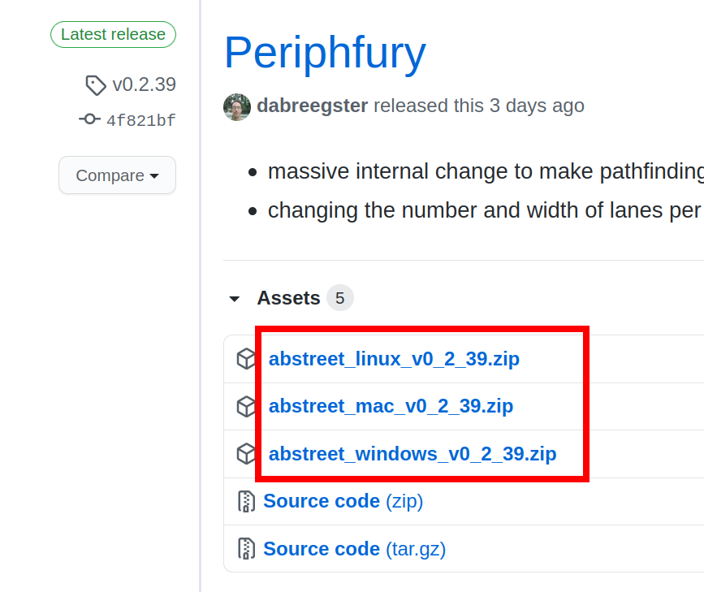
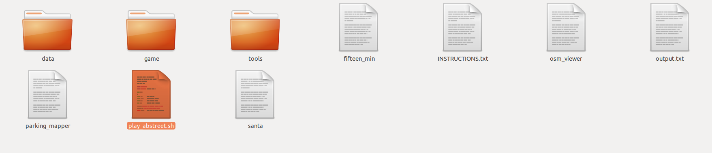
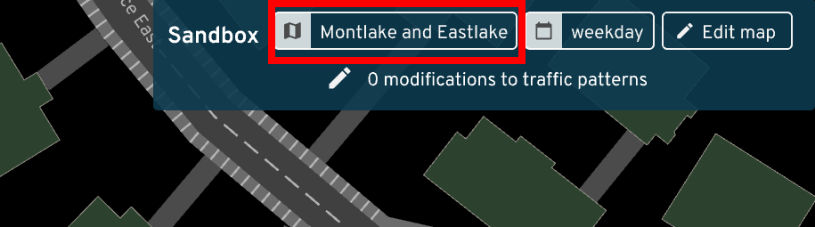
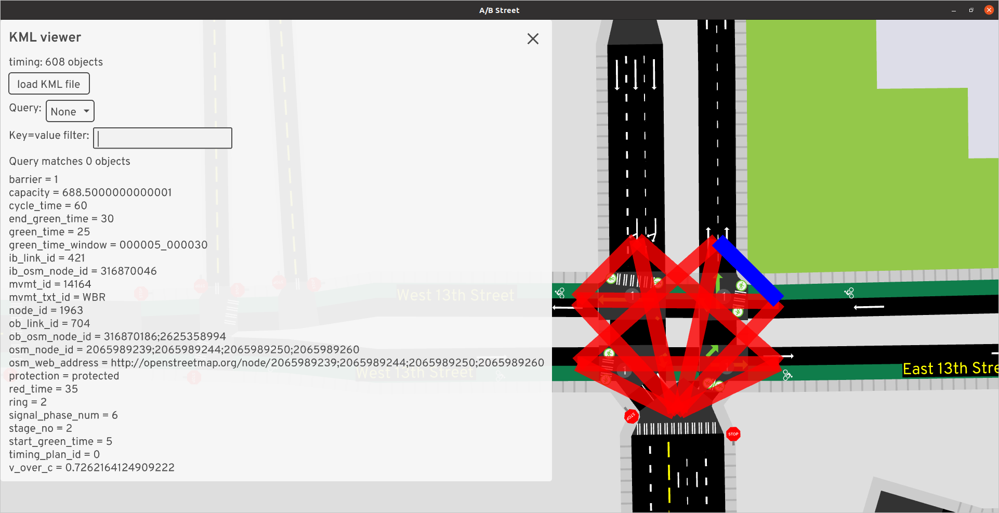

Instructions for ASU collaborators
These instructions are tailored to the ASU Transportation AI Lab.
The most important tip: ask questions! File an issue, email dabreegster@gmail.com, or ask for a Slack invite.
Installing
A new version is released every Sunday, but you probably don't need to update every week.
- Go to https://github.com/a-b-street/abstreet/releases and download the
latest
.zipfile for Windows, Mac, or Linux.

- Unzip the folder and run
play_abstreet.shorplay_abstreet.bat. If you get security warnings, see here.

- On the main title screen, click
Sandbox. This starts in Seattle by default, so change the map at the top.

- Choose USA, then Phoenix.

- You'll be prompted to download some files. It should be quick. After it's done, click Phoenix again.
You've now opened up the Tempe map!
A shortcut and improving the simulation in Tempe
On Windows, edit run_abstreet.bat and change the last line to:
game.exe --dev data/system/us/phoenix/maps/tempe.bin --infinite_parking 1> ..\\output.txt 2>&1
On Mac, edit run_abstreet.sh and change the last line to:
RUST_BACKTRACE=1 ./game --dev data/system/us/phoenix/maps/tempe.bin --infinite_parking 1> ../output.txt 2>&1
--dev data/system/us/phoenix/maps/tempe.bin will skip the title screen and
start on the Tempe map by default; this will save you lots of time.
--infinite_parking disables the parking simulation. By default, there's an
unrealistic amount of people walking around Tempe just to reach the spot where
their car is parked. We don't have good data yet about on- and off-street
parking, so it's best to just make driving trips begin and end at buildings or
off the map, without a step to search for parking.
There are a bunch of other startup parameters you can pass here too.
Importing a Grid2Demand scenario
When you run https://github.com/asu-trans-ai-lab/grid2demand, you get an
input_agents.csv file. You can import this into A/B Street as a scenario.
- Change the traffic from
none

- Click
import Grid2Demand data

-
Choose your
input_agents.csvfile -
A new scenario will be imported. Later you can launch this from the same menu; the scenario will be called
grid2demand

Grid2Demand needs a .osm file as input. The extract of Tempe that A/B Street uses is at https://abstreet.s3.us-east-2.amazonaws.com/dev/data/input/us/phoenix/osm/tempe.osm.gz. Note the file is compressed.
Modifying a scenario
You can transform a scenario before simulating it. This example will cancel all walking and biking trips from the scenario, only leaving driving and public transit.
- After loading a scenario, click
0 modifications to traffic patterns

-
Click
Change trip mode -
Select the types of trips that you want to transform, and change them to cancel. Click
Apply.

Importing Vol2Timing data
https://github.com/asu-trans-ai-lab/Vol2Timing/ produces timing.csv files
that you can import into A/B Street.
-
Open the traffic signal editor for an intersection in A/B Street.
-
Click
Edit entire signal -
Choose
import from a new GMNS timing.csv, then pick your file.
The import process isn't finished yet; some movements aren't matched properly,
some movements are incorrectly marked as protected, and no crosswalks are
imported yet. When you import, some error messages may be displayed, and others
might wind up printed to STDOUT (captured in output.txt on Windows).
If you want to import timing for more intersections in the same map, after
Edit entire signal, you should also have n option like
import from GMNS C:\path\to\timing.csv.
Debugging timing.csv
Along with QGIS, you can also visualize timing.csv in A/B Street directly.
-
From the title screen, choose
Internal dev tools. -
Change the map if necessary.
-
Click
view KML. -
Click
load KML file, then choose yourtiming.csv. -
Each movement is drawn in red. You can hover over a line-string to see its attributes, and click to open all details.

- Using the key=value filter on the left, you can type in
no=3to matchstage_no=3and easily check what movements belong to each stage.